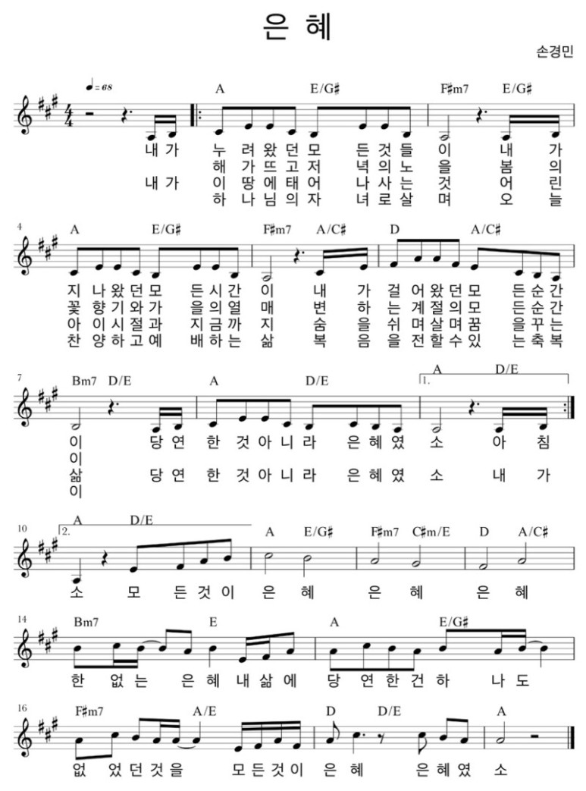

어떤 이름으로 사십니까
2026년 10월 18일 주일설교 "어떤 이름으로 사십니까"(창세기 4장 25~26절)과 같은 메시지를, 또 다른 이야기로 함께 나누는 가정예배입니다.
사무엘상 17:45-47 · "하나님께서 하실 거예요"라고 말한 다윗
1. 묵상기도
다같이잠시 눈을 감고 마음을 가다듬습니다. 이번 한 주 동안 하나님께서 우리 가족에게 해 주신 일을 하나씩 떠올리며, 하나님의 이름을 높이는 마음으로 나아갑니다.
2. 신앙고백
다같이나는 전능하신 아버지 하나님, 천지의 창조주를 믿습니다. 나는 그의 유일하신 아들, 우리 주 예수 그리스도를 믿습니다. 그는 성령으로 잉태되어 동정녀 마리아에게서 나시고, 본디오 빌라도에게 고난을 받아 십자가에 못 박혀 죽으시고, 장사된 지 사흘 만에 죽은 자 가운데서 다시 살아나셨으며, 하늘에 오르시어 전능하신 아버지 하나님 우편에 앉아 계시다가, 거기로부터 살아 있는 자와 죽은 자를 심판하러 오십니다. 나는 성령을 믿으며, 거룩한 공교회와 성도의 교제와 죄를 용서받는 것과 몸의 부활과 영생을 믿습니다. 아멘.
2004년 한국기독교교회협의회·한국기독교총연합회·대한성서공회 공동 새번역
3. 찬송
다같이은혜

4. 대표기도
담당자미리 정한 가족이 아래 기도문을 그대로 읽거나, 참고하여 자신의 말로 기도합니다.
사랑하는 하나님 아버지, 온 가족이 함께 모여 예배드릴 수 있어서 감사합니다. 우리는 무언가를 잘하면 "내가 했어!" 하고 먼저 말하고 싶어집니다. 하지만 우리가 가진 힘과 지혜와 용기는 모두 하나님께서 주신 것입니다. 무엇보다 우리를 죄에서 구해 주신 분은 예수님이십니다. 오늘 말씀을 들으며 우리 가족이 "하나님께서 하셨어요"라고 고백하게 해 주세요. 예수님 이름으로 기도합니다. 아멘.
5. 성경봉독
다같이사무엘상 17:45-47 (개역개정)
45다윗이 블레셋 사람에게 이르되 너는 칼과 창과 단창으로 내게 나아 오거니와 나는 만군의 여호와의 이름 곧 네가 모욕하는 이스라엘 군대의 하나님의 이름으로 네게 나아가노라
46오늘 여호와께서 너를 내 손에 넘기시리니 내가 너를 쳐서 네 목을 베고 블레셋 군대의 시체를 오늘 공중의 새와 땅의 들짐승에게 주어 온 땅으로 이스라엘에 하나님이 계신 줄 알게 하겠고
47또 여호와의 구원하심이 칼과 창에 있지 아니함을 이 무리에게 알게 하리라 전쟁은 여호와께 속한 것인즉 그가 너희를 우리 손에 넘기시리라
6. 말씀나눔
인도자지난 주일에 우리는 성경에 나오는 한 엄마 이야기를 들었어요. 하와는 첫아들을 낳았을 때 "내가 얻었다"고 말했어요. 그런데 오랜 시간이 지나 다시 아들을 낳았을 때는 "하나님이 주셨다"고 말했어요. 문장의 주인공이 "내가"에서 "하나님이"로 바뀐 거예요. 오늘은 이렇게 "하나님께서"라고 말한 소년, 다윗 이야기를 들어 볼게요.
이스라엘 군대와 블레셋 군대가 골짜기를 사이에 두고 마주 서 있었어요. 블레셋 군대에는 골리앗이라는 장수가 있었는데, 키가 3미터 가까이 되는 거인이었어요. 골리앗은 40일 동안 아침저녁으로 나와서 하나님과 이스라엘을 모욕했어요. 이스라엘 군인들은 모두 무서워서 아무도 나서지 못했어요.
그때 양을 치던 소년 다윗이 전쟁터에 있는 형들에게 음식을 가져왔다가 이 모습을 보았어요. 다윗은 사울 왕에게 가서 자기가 싸우겠다고 말했어요. 왕이 "너는 아직 어린 소년이다" 하고 말리자, 다윗은 양을 지키다가 사자와 곰을 물리친 일을 이야기했어요. 그런데 다윗은 "제가 힘이 세서 이겼어요"라고 하지 않았어요. "여호와께서 나를 사자의 발톱과 곰의 발톱에서 건져내셨은즉 나를 이 블레셋 사람의 손에서도 건져내시리이다"(삼상 17:37)라고 했어요. 사자와 곰에게서 나를 구해 주신 분은 하나님이니, 이번에도 하나님이 구해 주실 거라는 뜻이에요.
다윗은 갑옷도 칼도 없이 막대기와 매끄러운 돌 다섯 개, 물매만 들고 골리앗 앞에 섰어요. 골리앗이 비웃자 다윗이 외쳤어요. 오늘 우리가 읽은 말씀이에요. "너는 칼과 창으로 나에게 오지만, 나는 만군의 여호와의 이름으로 너에게 간다." 그리고 이 싸움의 목적도 말했어요. 다윗이 유명해지려는 것이 아니라 "온 땅이 하나님이 계신 줄 알게 하려고"였어요. 다윗은 "전쟁은 여호와께 속한 것"이라고, 곧 이 싸움을 이기게 하실 분은 하나님이라고 말했어요.
다윗이 물매로 던진 돌 하나에 골리앗이 쓰러졌어요. 돌을 던진 사람은 다윗이었지만, 이기게 하신 분은 하나님이셨어요. 그래서 이 이야기의 진짜 주인공은 다윗이 아니라 하나님이에요. 그날 그 자리에 있던 사람들은 다윗의 용기보다 하나님이 살아 계신다는 것을 보게 되었어요. "하나님의 이름을 높인다"는 말은 바로 이런 뜻이에요.
이 이야기를 듣고 "나도 다윗처럼 용감하면 무엇이든 이길 수 있어"라고 생각하기 쉬워요. 그런데 하나님은 우리에게 그렇게 약속하지 않으셨어요. 사실 우리는 다윗보다, 골리앗 앞에서 무서워 떨던 이스라엘 군인들을 더 닮았어요. 우리 힘으로는 죄를 이길 수 없거든요. 그래서 하나님은 예수님을 보내 주셨어요. 예수님은 우리 대신 십자가에서 죽으시고 다시 살아나셔서 죄와 죽음을 이기셨어요. 우리를 구원하신 것도 우리가 아니라 예수님이 하신 일이에요.
그래서 우리는 "내가 했어!"보다 "하나님께서 하셨어!"를 더 자주 말해요. 일이 잘될 때만이 아니에요. 받아쓰기를 잘 봤을 때는 "하나님이 배울 수 있는 머리와 가르쳐 주시는 선생님을 주셨어요" 하고 말할 수 있어요. 잘 못 봤을 때도 "그래도 하나님은 나를 사랑하시고 함께 계세요" 하고 말할 수 있어요. 우리 집에서 이런 말이 자주 들리면, 우리 가족을 통해 하나님의 이름이 높아져요.
7. 함께 나누는 이야기
다같이- 어린이와 함께 "내가" 문장을 "하나님께서" 문장으로 바꾸는 놀이를 해 보세요. 한 사람이 "내가 ○○ 했어!" 하고 말하면, 다른 가족이 "하나님께서 ○○ 하게 해 주셨어!"로 바꿔 말해 줘요. 예를 들면 "내가 동생한테 장난감을 빌려줬어!"는 "하나님께서 나누는 마음을 주셔서 빌려줄 수 있었어!"로, "내가 혼자 옷을 입었어!"는 "하나님께서 튼튼한 팔과 손을 주셔서 혼자 입을 수 있었어!"로 바꿀 수 있어요.
- 함께 생각해보기 다윗은 싸우러 나가기 전에, 예전에 하나님이 사자와 곰에게서 구해 주신 일을 기억했어요. 우리 가족이 기억하는 "하나님께서 해 주신 일"은 무엇인가요? 엄마 아빠가 먼저 하나 이야기해 주세요. 아이가 태어나던 날, 누군가 많이 아팠다가 회복된 일, 이사하고 낯선 곳에서 잘 지내게 된 일처럼 작은 일이어도 괜찮아요.
- 우리 가정을 위해 이번 주에 우리 가족이 해 볼 것을 하나 골라 보세요. ① 저녁 식사 때 "오늘 하나님께서 해 주신 일"을 한 가지씩 말하기 ② 누가 "내가 했어!"라고 하면 웃으며 "하나님께서?" 하고 물어봐 주기 ③ 기쁜 일이 있을 때 다 같이 "하나님, 감사합니다!" 하고 말하기
8. 합심기도
다같이가족이 돌아가며 짧게 한 가지씩 기도 제목을 나누고, 서로를 위해 소리 내어 기도합니다. 나이가 어린 자녀도 짧은 한마디로 참여할 수 있습니다.
9. 주기도문
다같이하늘에 계신 우리 아버지, 아버지의 이름을 거룩하게 하시며 아버지의 나라가 오게 하시며, 아버지의 뜻이 하늘에서와 같이 땅에서도 이루어지게 하소서. 오늘 우리에게 일용할 양식을 주시고, 우리가 우리에게 잘못한 사람을 용서하여 준 것같이 우리 죄를 용서하여 주시고, 우리를 시험에 빠지지 않게 하시고 악에서 구하소서. 나라와 권능과 영광이 영원히 아버지의 것입니다. 아멘.
2004년 한국기독교교회협의회·한국기독교총연합회·대한성서공회 공동 새번역